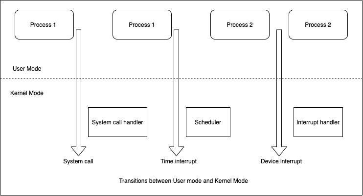

系統呼叫
介紹
系統呼叫（system call）是進入核心（kernel）的受控入口點，允許一個程序請求核心代表程序執行某些動作。核心透過系統呼叫應用程式介面（API）提供各種服務給程式。應用開發者通常不直接訪問系統呼叫，而是透過此API存取。這些服務包含，例如建立新程序、執行I/O，以及建立用於進程間通訊的管道。系統呼叫集合是固定的，每個系統呼叫由唯一的編號識別。不同系統呼叫清單可見於此處。
系統呼叫會將處理器狀態從使用者模式（user mode）切換到核心模式（kernel mode），以便CPU存取受保護的核心記憶體。每個系統呼叫可能帶有一組參數，這些參數指定從使用者空間（即程序的虛擬地址空間）傳遞到核心空間的資訊，反之亦然。從程式設計角度來看，呼叫系統呼叫看起來很像呼叫C函式。
系統呼叫類型
系統呼叫主要分為5種類型：
- 程序控制（Process Control）：用於處理與程序相關的任務，如程序建立、終止等。
- 檔案管理（File Management）：用於對檔案執行操作，如讀取/寫入檔案。
- 裝置管理（Device Management）：用於處理裝置，如讀/寫裝置緩衝區。
- 資訊維護（Information Maintenance）：處理作業系統與使用者程式之間的資訊與其傳輸。
- 通訊（Communication）：用於進程間通訊，亦用於建立與刪除通訊連線。
| 系統呼叫類型 | Linux範例 |
|---|---|
| 程序控制 | fork(), exit(), wait() |
| 檔案管理 | open(), read(), write() |
| 裝置管理 | ioctl(), read(), write() |
| 資訊維護 | getpid(), alarm(), sleep() |
| 通訊 | pipe(), shmget(), mmap() |
使用者模式、核心模式及其轉換
現代處理器架構通常允許CPU在至少兩種不同模式下運作：使用者模式與核心模式。虛擬記憶體區域會標示為使用者空間或核心空間。在使用者模式執行時，CPU只能存取標示為使用者空間的記憶體；嘗試存取核心空間會導致硬體例外。
任何時刻，一個程序可能執行在使用者模式或核心模式。可執行的指令類型依據模式而定，由硬體層面強制執行。CPU模式（亦稱處理器模式、CPU狀態、CPU權限等級）是某些電腦架構中中央處理單元的運作模式，對CPU所執行程序可執行的操作類型和範圍施加限制。核心本身不是程序，而是程序管理者。核心模型假定需要核心服務的程序會使用稱為系統呼叫的特定程式構造。
當程式在使用者模式執行時，無法直接存取核心的資料結構或程式。但當程式在核心模式執行時，這些限制不再適用。一般程式在使用者模式執行，只有在請求核心所提供的服務時才切換至核心模式。如果應用程式需要存取系統硬體資源（例如週邊設備、記憶體、磁碟），必須發出系統呼叫，觸發從使用者模式到核心模式的上下文切換。讀寫檔案時即遵循此程序。只有系統呼叫自身在核心模式下執行，應用程式碼仍維持在使用者模式。系統呼叫完成後，程序透過逆向上下文切換回使用者模式並帶回返回值。除系統呼叫外，核心例程可透過以下方式啟動：
- 執行該程序的CPU發出例外訊號，代表異常狀況（如無效指令），核心代表觸發例外的程序處理。
- 週邊設備向CPU發出中斷訊號，通知事件如需注意、狀態變更或I/O完成。每個中斷訊號由稱為中斷處理器的核心程式負責處理。由於週邊設備與CPU非同步運作，中斷在無法預測時間發生。
- 執行核心執行緒。由於其在核心模式執行，程式視為核心一部分。

如上圖，使用者模式下的程序1發出系統呼叫，隨即切換至核心模式並提供服務。程序1接著在使用者模式繼續執行，直到計時器中斷發生，核心模式啟動排程器並切換程序。程序2開始使用者模式執行，直到硬體裝置提出中斷。程序2被切回核心模式，負責處理該中斷。
write() 系統呼叫運作
write() 系統呼叫將資料寫入已開啟的檔案。
# include <unistd.h>
ssize_t write(int fd, void *buffer, size_t count);
buffer 是欲寫入資料的位址；count 為從buffer寫入的位元組數；fd 為指向欲寫入資料的檔案描述符。
write() 呼叫會將最多 count 個位元組從buffer寫入以 fd 指定的已開啟檔案。成功時回傳實際寫入的位元組數，可能少於 count，錯誤時回傳-1。對磁碟檔案做I/O時，write() 成功返回不代表資料已寫入磁碟，因核心進行磁碟I/O緩衝以減少磁碟操作並加速 write()。實際上是將資料從使用者空間緩衝區複製到核心緩衝區暫存，稍後核心將緩衝區寫入磁碟。
若在此期間其他程序嘗試讀取檔案的這些位元組，核心會自緩衝區快取中提供資料，而非檔案本體（較舊的內容）。此設計目標是讓write() 快速回應，無需等待較慢的磁碟操作。此設計也有效率，因為減少了核心必須執行的磁碟傳輸數量。
在 Linux 中使用 strace 進行除錯
strace 是用於追蹤使用者程序與 Linux 核心間轉換的工具。使用前須確認系統已安裝此工具，可執行：
$ rpm -qa | grep -i strace
strace-4.12-9.el7.x86_64
若無輸出，可透過：
$ yum install strace
屬於標準C函式庫的函式稱為函式庫函式，功能涵蓋廣泛，如開啟檔案、將時間轉換成可讀格式、比較字串等。部分函式庫函式是建立於系統呼叫之上，通常設計為比底層系統呼叫更友好的接口。例如 printf() 提供輸出格式化與資料緩衝，而 write() 系統呼叫僅輸出位元組區塊。Linux上最常用的標準C函式庫實作是 GNU C library glibc。
C語言提供 printf() 讓使用者以多種格式寫入資料。函式 printf() 將資料轉換成格式化的位元組序列，然後呼叫 write() 將這些位元組寫到輸出。我們用 strace 觀察執行 strace printf %s "Hello world" 時的過程：
~]$ strace printf %s "Hello world"
execve("/usr/bin/printf", ["printf", "%s", "Hello world"], [/* 47 vars */]) = 0
brk(NULL) = 0x90d000
mmap(NULL, 4096, PROT_READ|PROT_WRITE, MAP_PRIVATE|MAP_ANONYMOUS, -1, 0) = 0x7f8fc672f000
access("/etc/ld.so.preload", R_OK) = -1 ENOENT (No such file or directory)
open("/etc/ld.so.cache", O_RDONLY|O_CLOEXEC) = 3
fstat(3, {st_mode=S_IFREG|0644, st_size=98854, ...}) = 0
mmap(NULL, 98854, PROT_READ, MAP_PRIVATE, 3, 0) = 0x7f8fc6716000
close(3) = 0
open("/lib64/libc.so.6", O_RDONLY|O_CLOEXEC) = 3
read(3, "\177ELF\2\1\1\3\0\0\0\0\0\0\0\0\3\0>\0\1\0\0\0\20&\2\0\0\0\0\0"..., 832) = 832
fstat(3, {st_mode=S_IFREG|0755, st_size=2156160, ...}) = 0
mmap(NULL, 3985888, PROT_READ|PROT_EXEC, MAP_PRIVATE|MAP_DENYWRITE, 3, 0) = 0x7f8fc6141000
mprotect(0x7f8fc6304000, 2097152, PROT_NONE) = 0
mmap(0x7f8fc6504000, 24576, PROT_READ|PROT_WRITE, MAP_PRIVATE|MAP_FIXED|MAP_DENYWRITE, 3, 0x1c3000) = 0x7f8fc6504000
mmap(0x7f8fc650a000, 16864, PROT_READ|PROT_WRITE, MAP_PRIVATE|MAP_FIXED|MAP_ANONYMOUS, -1, 0) = 0x7f8fc650a000
close(3) = 0
mmap(NULL, 4096, PROT_READ|PROT_WRITE, MAP_PRIVATE|MAP_ANONYMOUS, -1, 0) = 0x7f8fc6715000
mmap(NULL, 8192, PROT_READ|PROT_WRITE, MAP_PRIVATE|MAP_ANONYMOUS, -1, 0) = 0x7f8fc6713000
arch_prctl(ARCH_SET_FS, 0x7f8fc6713740) = 0
mprotect(0x7f8fc6504000, 16384, PROT_READ) = 0
mprotect(0x60a000, 4096, PROT_READ) = 0
mprotect(0x7f8fc6730000, 4096, PROT_READ) = 0
munmap(0x7f8fc6716000, 98854) = 0
brk(NULL) = 0x90d000
brk(0x92e000) = 0x92e000
brk(NULL) = 0x92e000
open("/usr/lib/locale/locale-archive", O_RDONLY|O_CLOEXEC) = 3
fstat(3, {st_mode=S_IFREG|0644, st_size=106075056, ...}) = 0
mmap(NULL, 106075056, PROT_READ, MAP_PRIVATE, 3, 0) = 0x7f8fbfc17000
close(3) = 0
open("/usr/share/locale/locale.alias", O_RDONLY|O_CLOEXEC) = 3
fstat(3, {st_mode=S_IFREG|0644, st_size=2502, ...}) = 0
mmap(NULL, 4096, PROT_READ|PROT_WRITE, MAP_PRIVATE|MAP_ANONYMOUS, -1, 0) = 0x7f8fc672e000
read(3, "# Locale name alias data base.\n#"..., 4096) = 2502
read(3, "", 4096) = 0
close(3) = 0
munmap(0x7f8fc672e000, 4096) = 0
open("/usr/lib/locale/UTF-8/LC_CTYPE", O_RDONLY|O_CLOEXEC) = -1 ENOENT (No such file or directory)
fstat(1, {st_mode=S_IFCHR|0620, st_rdev=makedev(136, 1), ...}) = 0
mmap(NULL, 4096, PROT_READ|PROT_WRITE, MAP_PRIVATE|MAP_ANONYMOUS, -1, 0) = 0x7f8fc672e000
write(1, "Hello world", 11Hello world) = 11
close(1) = 0
munmap(0x7f8fc672e000, 4096) = 0
close(2) = 0
exit_group(0) = ?
+++ exited with 0 +++
execve("/usr/bin/printf", ["printf", "%s", "Hello world"], [/ 47 vars /]) = 0
第一個系統呼叫是 execve()，其執行三件事：
- 作業系統停止父程序的複製程序。
- 載入新程式（此處為 printf()），並啟動新程式。
- execve() 用 printf 可執行檔載入的新內容替換目前程序記憶體堆疊的定義部分。
該行起始字execve為被執行的系統呼叫名稱。第一參數必須為二進位可執行檔或指令腳本的路徑。第二參數為傳遞給新程式的字串陣列，約定第一字串為執行檔名。第三參數為環境變數。等號後的數字（此例為0）是execve系統呼叫的回傳值，表示成功。
open("/usr/lib/locale/UTF-8/LC_CTYPE", O_RDONLY|O_CLOEXEC) = -1 ENOENT (No such file or directory)
此行中，程式嘗試開啟 /usr/lib/locale/UTF-8/LC_CTYPE 檔案，但系統呼叫失敗（回傳 -1），錯誤訊息為「無此檔案或目錄」（ENOENT），表示未找到該檔案。
brk(NULL) = 0x90d000
brk(0x92e000) = 0x92e000
brk(NULL) = 0x92e000
系統呼叫 brk() 用於擴大或縮減程序的資料段，回傳資料段結束的新地址。
open("/lib64/libc.so.6", O_RDONLY|O_CLOEXEC) = 3
read(3, "\177ELF\2\1\1\3\0\0\0\0\0\0\0\0\3\0>\0\1\0\0\0\20&\2\0\0\0\0\0"..., 832) = 832
上述輸出顯示成功呼叫 open()，接著呼叫 read()。
在 open() 呼叫中，第一參數是檔案路徑，第二參數定義存取權限。本例中O_RDONLY表示唯讀，O_CLOEXEC則啟用執行時自動關閉標誌，用於避免多執行緒程序中開啟檔案描述符的競爭狀況。3 是檔案描述符，0、1、2 分別由標準輸入、標準輸出及標準錯誤佔用，所以下一個未用描述符是3。
在 read() 呼叫中，第一參數為檔案描述符3，第二參數為資料讀取緩衝區，第三參數為緩衝區大小。回傳值832表示成功讀取832字節。
close(3) = 0
close系統呼叫由核心關閉檔案描述符，0 表示成功。
write(1, "Hello world", 11Hello world) = 11
前面介紹過 write()，其第一參數為檔案描述符，第二為待寫入資料緩衝區，最後為寫入字元數。輸出到螢幕是透過檔案 /dev/tty 以及標準輸出描述符1執行。成功時回傳寫入字元數，此例為11。
+++ exited with 0 +++
表示程式成功結束，退出代碼為0。在Linux中，退出碼0通常表示執行成功。
不必記憶所有系統呼叫及其功能，有需要時可參考文件。請先確保已安裝以下套件：
$ rpm -qa | grep -i man-pages
man-pages-3.53-5.el7.noarch
使用 man 指令搭配系統呼叫名稱可查閱文件（如：execve）：
man 2 execve
除系統呼叫外，strace還可用於偵測程式讀寫的檔案。上述跟蹤中，系統呼叫 open("/lib64/libc.so.6", O_RDONLY|O_CLOEXEC) = 3 開啟了 libc 共享物件檔 /lib64/libc.so.6，此檔包含各種標準函式C實作，如 printf() 定義，是輸出"Hello World"所需函式。
strace亦可檢查程式是否卡死。追蹤時可觀察程式卡在何處，並找出錯誤原因，有助了解效能變慢原因。
雖然 strace 有上述用途，但若在生產環境中使用，strace並非良好選擇，因為其帶來相當大的系統負擔。根據Red Hat 高級軟體工程師 Arnaldo Carvalho de Melo 的效能測試，使用 strace 追蹤時，程序執行速度變慢約173倍，對生產環境可能有災難性影響。